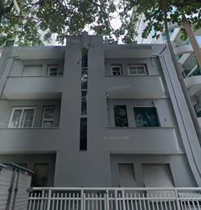
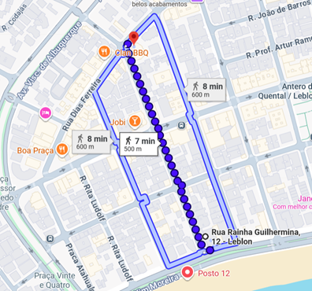

Essenciais
Mar
Chegada ao Rio 🛬
🏠 Alojamento
Rua Rainha Guilhermina, 12 — Leblon, Rio de Janeiro, 22441-120

✈️ Chegada
- Transfer: Aeroporto Galeão — 6h30 — marcado com Júnior
- Logística inicial (imigração): tempo médio ~40–50 min
- Uber direto para a Zona Sul (Leblon/Copa): tempo médio ~40–50 min
- Chegamos à Zona Sul por volta das 8h30–9h00
☕ Pequeno-almoço
PA no Talho Capixaba — Leblon — 5 min a pé do nosso AP (abre às 7h)
🏊 Day-use
🕐 Horário: 11h às 20h (a partir das 15h DJ)
💰 R$399,99/adulto — R$200,00 convertidos em consumação no bar
👶 Criança: R$200,00 — R$100,00 convertidos em consumação
🏖️ Uma toalha por pessoa incluída
⏳ Aguardar resposta do Hilton para day use
🛒 Supermercado Zona Sul — Leblon (Posto 12)
📍 Av. Delfim Moreira, esquina com R. Rainha Guilhermina
Literalmente 1–2 min a pé do Posto 12. É onde os moradores do Leblon compram coisas rápidas antes da praia.
- Abre cedo e fecha tarde
- Bebidas geladas, snacks, frutas, sandes, protetor solar
🛍️ Outras opções próximas
Zona Sul — Rua Dias Ferreira
📍 8 min a pé — mais completo, grande variedade

Hortifruti Natural da Terra — Ataulfo de Paiva
📍 10 min a pé — ótimo para frutas, sumos e snacks saudáveis antes da praia
Drogaria Cristal — 24h
📍 Rua Dias Ferreira, 420 — 8 min a pé
🥖 Grãu Artesanal
📍 Rua Conde de Bernadotte, 26 — Leblon — ~5 min a pé da Rua Rainha Guilhermina
✅ 100% fermentação natural / massa-mãe
🏪 Decathlon + McDonald's + Café Cardin
📍 13 min a pé
🏧 Multibancos
- Mais próximo: Bradesco — Rua Rainha Guilhermina, 117
- 24h e seguro: Banco24Horas — Rua José Linhares (Pão de Açúcar)
- Backup sólido: Banco24Horas — Av. Ataulfo de Paiva
🏊 Skybars / Piscinas para marcar
- Sky Leme
- Hilton Copacabana
- Othon Palace
Mar
Leblon + Arpoador + Ipanema 🌊
🌅 Manhã — Praia do Leblon
Ótima para famílias e super agradável para passar a manhã.
🍽️ Almoço
BB Lanches
A pé do Posto 12: ~8–10 min
- Muito barato para o bairro
- Açaí excelente, pastéis, sanduíches, hamburgueres
- Ambiente superdescontraído (spot tradicional carioca)
Big Polis — Sucos + pratos baratos + vibe de praia
A pé: 10–12 min
- Açaí delicioso + omeletes + hamburgueres + sanduíches
- Pratos rápidos e económicos
- Muito frequentado por jovens
Tapí Tapioca
A pé: ~10–12 min
- Tapiocas deliciosas, baratas e variadas + açaí
- Excelente pós-praia com adolescentes
Beach Sucos
A pé: 6–8 min
- Muito perto da areia
- Sanduíches, salgados, açaí e pratos executivos
- Opção rápida e leve
2V Conveniência há em Ipanema e no Leblon
- Pokes, saladas e sanduíches
- Bebidas e gelados
- Preços bem mais acessíveis do que restaurantes tradicionais
Balcão Oficial — Comida de Rua
Kebabs e bowls gourmet — Arpoador, Ipanema e Leblon
So-lo Café
Há em Copacabana, Ipanema e no Leblon — bom café
🚲 Tarde
Caminhar ou bicicleta pelo calçadão até Ipanema.
Distância: 2,3 km — cerca de 30 min
📍 Paragens
Melhor açaí da praia
Açaí do Moreno — Posto 9 e 10 ou Picolé bacio de late — Posto 9
Estátua de Tom Jobim
📍 Arpoador / Posto 8 — foto obrigatória | Ícone máximo da Bossa Nova
🌅 Fim de tarde — Pôr-do-sol no Arpoador
Programa clássico e imperdível.
👉 Plano B (se estiver impossível de cheio): Parte lateral do Arpoador (lado Ipanema) / Calçadão do Posto 7/8 — vista ótima, menos pressão
🛍️ Compras
Loja Havaianas Ipanema
tb há havaianas Leblon · Segunda a sábado: 10h00–20h00
Bar Garota de Ipanema
Mostrar a placa, o interior do bar e explicar que foi neste cantinho que nasceu um dos maiores símbolos do Brasil.
🍽️ Jantar — Escolha por humor
A pé: ~12 min · Comida brasileira simples e muito acessível — comida de prato e tem menu executivo · Ambiente de "boteco light" seguro · Porções boas e preços raros para o Leblon
➡️ ENTÃO jantar na praia ✅ ou outro quiosque ao lado ✅
Quiosque Quase Nove: camarão, petiscos, bebidas
Big Néctar ✅ — sanduíches, pizzas, menus simples, barato e rápido
Copanema Mix ✅ — coxinhas, sanduíches e pratos rápidos
Tropikus de Ipanema — pratos quentes acessíveis
Choppe no Belmonte ✅
🥩 O nosso churrasco — Dia 30 ou dia a eleger
✅ 1) Braseiro da Gávea — a melhor opção para o vosso perfil
- Porções grandes (as de 2 pessoas dão à vontade para 3–4)
- Acompanhamentos clássicos: arroz, farofa, vinagrete, fritas
- Picanha para 2 pessoas ~ R$120
- Picanha para 4 pessoas ~ R$230 (excelente custo/qualidade para carne nobre)
- Tem fila, sobretudo à noite e ao fim-de-semana
- 👉 Solução: ir cedo (18h–18h30) ou almoço tardio
🔥 Pura Brasa (ou Purabrasa)
- Funciona como churrasco sem formalismos
- Boa alternativa ao Braseiro (especialmente se houver fila)
Filé do Lira — Leblon
Cantinho do Leblon — o mais barato
Galeto do Leblon
📍 Rua Dias Ferreira, 154 — Leblon
- Preço melhor que churrascarias, porções grandes
- O que pedir: galeto com batatas · picanha em porção · arroz biro-biro · farofa crocante
Chancada Bar Botafogo
Jobi → choppe pós-praia obrigatório ✅
📍 Fecho do Dia
➡️ 🥥 Quiosque do Posto 12 (General Baixo Bebê — Leblon)
✅ Todos os dias: 7h00 às 22h00 (inclui domingo)
- café da manhã simples
- bebidas, petiscos
- almoço leve
- fim de tarde / início de noite
🚇 Transportes Botafogo → Leblon
Metro: Linha 1/4 — sentido Ipanema / Leblon
- Descer em: Antero de Quental ou Jardim de Alah
- Tempo: 10–15 min · Preço: R$ 6,90
Uber: Tempo: 10–20 min · Preço: R$ 18–28
Abr
Cristo Redentor + Lagoa 🌿
🚗 Saída — 06:30–07:00
Uber de casa até Trem do Corcovado – Estação Cosme Velho
📍 Rua Cosme Velho, 513 – Cosme Velho — cerca de 25–35 minutos | 30 a 60€ reais
6h15 (se fores muito cautelosa, 6h10)
- Chegar com alguma margem
- Tomar um café rápido antes do trem (há cafés simples junto à estação)
🎟️ Voucher

Código de Acesso: LB27686093
HORÁRIO DO CHECK-IN: 01/04/2026 06:50
HORÁRIO DE PARTIDA: 01/04/2026 07:20
3 Adultos + 1 Criança (7–11 anos)
⚠️ Ingressos não utilizados devem ser devolvidos na bilheteria NO MESMO DIA do passeio
💡 Como garantir os melhores lugares no trem
Dica prática: chega mesmo cedo à plataforma e entra logo que autorizem — não há lugares marcados.
Senta-te do LADO ESQUERDO 👉 lado esquerdo no sentido da subida
✅ Posiciona-te logo no INÍCIO da fila de embarque, do lado DIREITO da plataforma
👉 Parece contra-intuitivo, mas é assim que funciona:
- O trem entra na plataforma de frente
- Quem está do lado direito da plataforma acaba por entrar no lado esquerdo do comboio
- Quem espera no meio ou do lado errado, entra "ao calhas" e perde os melhores lugares
- Chega à estação logo às 6h50
- Depois da bilheteira, dirige-te diretamente para a zona de embarque
- Fica: à direita da plataforma · o mais à frente possível da fila
- Quando autorizarem a entrada, entra com calma e vira imediatamente para a esquerda dentro do vagão
Evita os primeiros bancos muito encostados à porta (mais gente a passar)
Mesmo em pé, o lado esquerdo continua a ser melhor para fotos
🖨️ Imprimir o voucher para ter acesso ao Trem do Corcovado
🚂 07:20–08:00 | Trem do Corcovado
- Viagem tranquila pela mata
- Excelente horário: menos gente e melhor visibilidade
✝️ 08:00–09:00 | Cristo Redentor
- Tempo ideal para fotos, contemplação e circular com calma
- Normalmente o céu está mais limpo nesta hora
- Não forces demasiado — guarda energia para o resto do dia
✅ Dica prática: começa pelas fotos "clássicas" e depois afasta-te um pouco para ângulos laterais (fica menos cheio)
🚂 09:00–09:30 | Descida do Corcovado
- Volta pelo trem
- Ao chegar novamente ao Cosme Velho, chama um Uber/táxi
📍 09:45–10:15 | Mirante Dona Marta
- Paragem curta, mas muito impactante
- Vista frontal do Cristo + Baía + Pão de Açúcar
- Ideal para adolescentes (rápido, visual, sem esforço)
- 20–30 min são suficientes
Caminha 2–3 minutos até à Rua Cosme Velho (zona aberta, fácil para apps)
Coloca no Uber: "Mirante Dona Marta"
⚠️ Muitos motoristas aceitam subir, mas podem pedir para aguardar no estacionamento para a descida — é normal
💰 Preço médio: R$ 25 – R$ 40
Distância curta | Feito exclusivamente de carro | Uber/táxi deixa-te à porta do mirante
Paragem típica: 20–30 min
📍 10:35–11:00 | Vista Chinesa
- Continua no mesmo Uber
- Vista mais ampla do dia: Lagoa, Ipanema, Leblon, Dois Irmãos
- Normalmente menos cheia a meio da manhã
- 15–20 min chegam perfeitamente
💰 R$ 25 – R$ 40
Trajeto curto e direto pela floresta, estrada asfaltada
📍 11:30–12:30 | Cascatinha Taunay
- Vista Chinesa → Cascatinha Taunay (da para tomar banho)
- Acesso fácil, praticamente ao lado do estacionamento
- Reserva 45–60 min, dependendo se entram na água
Destino: "Cascatinha Taunay" ou "Estrada da Cascatinha, 850 – Alto da Boa Vista"
⚠️ O Uber pode deixar à entrada do parque — caminhada fácil de 5–10 minutos até à cascata
💰 R$ 20 – R$ 35
"Vamos fazer Dona Marta, Vista Chinesa e Cascatinha Taunay. Se puder aguardar em cada paragem, pagamos o tempo."
Os motoristas já estão habituados a este roteiro.
⏳ Se apanhares um motorista bom, podes negociar esperar e fazer os 2–3 pontos (sai mais em conta)
💰 Valor típico se negociares tudo junto: R$ 120 – R$ 180 no total (dependendo do tempo de espera e trânsito)
😊 Descer para a cidade — Lagoa Rodrigo de Freitas
🥘 1) Quiosques da Lagoa — a melhor solução custo-benefício
📍 Margem da Lagoa – Av. Borges de Medeiros / Epitácio Pessoa
- Preços bem mais baixos do que restaurantes fechados
- Come-se de frente para a Lagoa
- Serviço rápido, informal, perfeito depois de passeios
O que encontras:
- PFs simples (arroz, feijão, frango/peixe)
- Sanduíches, saladas, açaí, água de coco
💰 Valores típicos: Prato / sanduíche: R$ 30–45 · Bebidas: R$ 8–15
👉 Dica prática: escolhe quiosques com mais cariocas do que turistas — normalmente perto do Parque dos Patins ou do Corte do Cantagalo
🦦 Onde ver capivaras na Lagoa Rodrigo de Freitas
As zonas mais frequentes e fiáveis são:
✅ Parque dos Patins
📍 Lado da Avenida Borges de Medeiros — é o spot nº 1 para capivaras
- Costumam estar: na relva, junto à água, sobretudo a meio/final da tarde
- Muito habituadas a pessoas (observação tranquila, sem stress)
👉 Pede o Uber para: "Parque dos Patins – Lagoa Rodrigo de Freitas"
🦦 15:30–16:00 | Passeio + capivaras
- Caminhada leve pela margem
- Procurar capivaras na relva / junto à água
- Fotos giras, momento "uau" para adolescentes
🚴 16:00–16:45 | Atividade (escolher 1)
Consoante o nível de energia:
Opção A – Bicicletas / trotinetes
Aluguer fácil na zona · Volta curta (20–30 min chega) · Sensação de liberdade que eles adoram
🚲 Bike Itaú (oficial da cidade)
Há várias estações à volta da Lagoa, incluindo: Parque dos Patins · Borges de Medeiros · Epitácio Pessoa · Jardim Botânico / Gávea
Bicicletas normais e elétricas · A ciclovia da Lagoa é: plana, contínua, segura
🦢 Pedalinho na Lagoa — Como funciona
✅ Principalmente na zona do Corte do Cantagalo
- Pedalinhos em forma de cisne (eles adoram 😁)
- Capacidade variável (2 até 4–6 pessoas)
- Normalmente 30 minutos
- R$ 20 a R$ 40 por pedalinho, dependendo do dia e do modelo
🌇 17:30–18:00 | Golden hour na Lagoa
- Luz lindíssima
- Cristo + montanha + água
- Fecha o dia com calma (sem precisar "fazer mais nada")
Abr
Orla: Leblon → Leme 🚲
🚲 Ciclovia
Leblon → Ipanema → Arpoador → Copacabana → Leme
Ciclovia contínua 📏 Distância realista (só ida): ~10–12 km
⏱️ Tempo confortável: 1h30–2h com paragens
🏰 Paragem — Forte de Copacabana
Ingresso: R$6–10 · Distância: 4 km (12 min)
☕ Confeitaria Colombo
10h00 ou lanche da tarde 16–18h
Consumação média:
- Café individual: R$40–60
- Café para duas pessoas: R$ 80–140
🏖️ Praia do Leme
- Barraca do Sena (cadeira 3 e guarda sol 7, agua coco 8)
- Mureta do Leme — Almoço (segunda a sexta) Menu executivo: 55 reais
🍦 Gelado
Rua Rodolfo Dantas — Sorvete Kurtos Rio – 10 reais | Próximo do Copacabana Palace
🌅 Bar da Laje — Fim de tarde
- BAR DA LAJE sair do Leblon entre 15h30 e 16h00
- Apanhar a kombi no Posto 12 e ficar até perto do pôr do sol
- Regressar antes de escurecer totalmente
⚠️ Importante:
Reservar a kombi com antecedência, normalmente funciona fins de semana
Confirmação via WhatsApp/telefone: +55 21 96767-0838 · +55 21 3323-5807
Abr
Ciclovia Tim Maia — 9 km 🚲
⏰ Melhor horário
Manhã cedo: 7h00 – 9h30 — luz linda, mais fresco, ciclovia tranquila
🚲 Estações Tembici
Leblon
- Av. General San Martin
- Av. Delfim Moreira
São Conrado
Estação perto da Praia do Pepino
📍 Percurso
1. Leblon → início da ciclovia
Entrar pela Avenida Niemeyer — vistas de mar abertas
Tempo: 10–12 min
2. Mirantes do Leblon
Distância: 1 km
- Mirantes oficiais; fotos do Vidigal e da orla
3. Vidigal – Costão da Niemeyer
Distância: 2–2,5 km — Trecho muito cinematográfico
4. Praia de São Conrado – Praia do Pepino
Distância: 3,8 km
- Pouso dos parapentes, mar calmo; restaurantes e quiosques
Tempo total desde o Leblon: 20–25 min
🍽️ Onde almoçar — Quiosques da Praia do Pepino
- Peixe grelhado, açaí, sanduíches
🏖️ Praia da Joatinga +2.5 kms
👉 Só ir se: mar calmo, energia boa, não estiver cheia
Uma das praias mais bonitas do Rio.
- Pequena, água azul-turquesa, acesso por escadaria entre rochas
🏠 Retorno ao Leblon — Parque Dois Irmãos
Como chegar — Uber: Digite: "Parque Penhasco Dois Irmãos – Leblon"
O carro deixa praticamente na entrada — Caminhada final: 5–8 min
Vista panorâmica da Zona Sul
Tempo ideal: 30–45 min
O que levar: água e ténis
Abr
Lapa & Feira do Lavradio 🎶
🚇 09h30 — Chegada
Estação Carioca
10–12 min a pé até à Rua do Lavradio.
🛍️ 10h00 — Feira do Lavradio
Primeiro sábado do mês.
O que encontras: artesanato, antiguidades, música ao vivo, bares na rua
Dica: provar pastel ou caldo de cana.
☕ 11h30 — Café
Sugestões:
- Café Lapa
- Bar Brasil
🎨 12h15 — Escadaria Selarón
10 minutos a pé.
🍽️ 13h30 — Almoço
Casa Momus ✅ Preços controlados
✅ Ambiente histórico · Boa comida brasileira
🏛️ 15h00 — Passeio cultural
- Theatro Municipal
- Catedral Metropolitana + Avenida República do Chile — prédio da TCA (exterior)
🥁 17h00 — Samba
Começa geralmente durante a tarde nos primeiros sábados do mês
Ambiente melhor se houver adolescentes 👉 Fica 1h máx. — o objetivo é sentir o clima, não virar a noite.
🚗 Mobilidade
- Leblon → Lapa — Uber: R$ 22–35
- Metro: ~30 min
- Dentro da Lapa: a pé
- Regresso: Uber R$ 25–40
Abr
Feira Hippie de Ipanema 🌸
🌊 Mergulho na praia e Feira Hippie de Ipanema
📍 Praça General Osório — Domingos 8h às 18h
🪨 Pedra do Sal — domingo, 5 de abril de 2026
- A Pedra do Sal tem samba todos os domingos
- Há bares/restaurantes no entorno que servem feijoada ao almoço
- O ambiente é: autêntico
⏰ Como funciona no domingo:
- Feijoada normalmente a partir das 11h / 12h
- Samba começa de forma leve à tarde e cresce ao longo do dia
🍲 Bar da Tia Ciata
📍 Rua Argemiro Bulcão (em frente/ao lado da Pedra do Sal)
- É o mais consistente para feijoada ao almoço
- Ambiente simples, tradicional
- Feijoada servida ao meio-dia/início da tarde
- Costuma ter samba mais organizado e tranquilo durante o dia
👉 É a opção mais segura e previsível para famílias
🍲 Da Pedra Bar e Restaurante
📍 Rua Argemiro Bulcão, 33
- Serve feijoada aos domingos
- Estrutura de restaurante (mesas, cozinha fixa)
- O samba normalmente começa mais tarde (fim de tarde/noite)
🚗 Como ir
👉 Uber até "Pedra do Sal – Rua Argemiro Bulcão"
🚗 Como sair (isto é chave)
Trânsito ainda controlado
📍 Para chamar Uber:
- Caminha 5 minutos até a Rua Sacadura Cabral (mais fácil do que tentar chamar no meio da roda)
A Pedra do Sal é um ponto cultural permanente, muito frequentado por famílias durante o dia
🏛️ Escadaria do Brasil ✅
Ela fica no Morro da Conceição (bairro da Saúde), dentro do circuito da Pequena África, muito perto da Pedra do Sal, Cais do Valongo e Jardim Suspenso do Valongo.
📍 Localização: a poucos minutos a pé de Pedra do Sal — paragem rápida (10–15 min)
"Aqui estamos na Pequena África, onde nasceu muito da cultura do Rio e do Brasil."
⚽ Maracanã???
Abr
Grumari 🏖️
🚗 Como chegar
Uber 20–30 min desde o Leblon UberX: R$ 60–90
Volta: R$ 70–100
🏖️ Grumari — Praia selvagem e extensa
Sair entre 7h30 e 8h00
- Evitam trânsito, cancelas fechadas em Grumari, apanham a praia linda e vazia
- Chamar Uber em Grumari (funciona bem até ~16h30)
- Se houver dificuldade: caminhar 5–10 min até à estrada principal
🏊 Classico Beach Club – Grumari ✅✅✅
-mto caro · reservas são feitas por WhatsApp
📞 +55 21 98959-0004 (somente mensagens)
🍽️ Quiosque do Russo – Grumari (mais simples, mais local)
🍱 Comida de praia clássica
- Menos "arrumado" que o Classico
- Deixar para almoçar depois das 14h (serviço abranda)
🚗 Carro — Pegar no Leblon às 19h00
✅ Vantagens:
— mesmo edifício da retirada do carro/garagem coberta, segurança
👉 Para o vosso plano (sair às 7h), encaixa perfeitamente
📌 Esta garagem é operada por rede grande (Estapar / similar), usada exatamente para este tipo de situação. Custo típico total ✅ 50 reais pela noite inteira
Retirada: 06 de abril de 2026 às 19:00 — RIO DE JANEIRO - LEBLON
Devolução: 10 de abril de 2026 às 19:00 — RIO DE JANEIRO - LEBLON
Jose Linhares, 245 - RIO DE JANEIRO - Rio de Janeiro
Fiat Argo ou similar — ECONÓMICO COM AR CONDICIONADO
Abr
Saída para Ilha Grande 🌴
🚗 Saída em direção a Conceição de Jacareí
Ilha Grande — 3 noites | Pousada das Palmas — reserva whatsapp
Duração média: 1h45–2h
📍 Rota principal: BR-101 (Rio–Santos)
✅ A estrada corta a própria vila de Conceição de Jacareí — não tem como errar
⛽ Onde fazer uma paragem boa (opcional)
🐯 Posto BR / Graal Itaguaí ✅✅
Casas de banho limpas, café decente, snacks rápidos
🐯 Postos menores já na Rio–Santos
- Há postos simples ao longo da BR-101
🪸 Chegada a Conceição de Jacareí — dicas-chave
📍 Ao chegar:
- A BR-101 passa mesmo em frente à praia
- O cais fica do lado do mar
- Basta atravessar a estrada
🚗 Estacionamento:
- Existem estacionamentos privados informais perto do cais
- Custo geralmente baixo 💰 R$ 20 a R$ 30 por dia
- 💵 Pagamento em dinheiro
⏰ Timing ideal (exemplo realista)
- 07h00 — saída do Leblon
- 08h30 — chegada a Conceição de Jacareí
- 08h30–09h00 — estacionamento + café / WC
- 09h00 — prontos para o embarque, sem stress
💵 Onde o dinheiro é essencial
- Táxi-boat, passeios de barco, pequenas praias, bares simples
- Trilhas (água, coco, snacks)
- Multibancos (ATMs) são poucos
👉 R$ 500–700 em dinheiro, distribuído
🌴 Pousada das Palmas
Fica na Praia de Palmas / Enseada das Palmas
- Praia de Palmas, mar calmo, poucas pessoas, Snorkel perto das pedras
Almoço Restaurante da Pousada das Palmas
Jantar na própria pousada
Abr
Lopes Mendes 🌴
🗺️ Como ir para Lopes Mendes a partir da Pousada das Palmas
Vocês estão num dos melhores pontos da ilha para isso.
🥾 Trilha direta (recomendada para vocês)
📍 Palmas → Pouso → Lopes Mendes
- Distância: ~1 km · Tempo: 20–30 min
- Trilha T11, bem marcada · Nível: fácil / médio
- ✅ Apenas vendedores simples (água, bebidas, snacks)
- ✅ Em época alta, há barracas improvisadas
- 👉 Estratégia certa: levar snacks
- Almoçar bem ao regressar a Palmas
- Pousada das Palmas (recomendado) ou
- Praia do Pouso (bar simples, se quiserem variar)
🍽️ Jantar
✅ Outra vez na pousada (faz sentido logístico)
Abr
Passeio de Barco ou Praia Vizinha 🚤
🚤 Opção A — Táxi-boat
Saindo de Palmas: Praia do Pouso, Abraãozinho, Lagoa Azul (se o mar permitir)
💰 Valores típicos: R$ 80–150 por pessoa (dependendo do roteiro)
👉 A própria pousada ajuda a organizar.
🍽️ Se quiserem jantar "melhor" uma noite
👉 Ir de barco até Vila do Abraão (se houver transporte)
Restaurantes muito bons em Abraão:
🏆 Adega Farol dos Castelhanos
📍 Centro de Abraão
🍱 PF, peixe frito, arroz, feijão, fritas
- PF / prato executivo: R$ 30–40
- Peixe frito com acompanhamentos (para 2): ~R$ 70–80
🏆 Restaurante Dom Mario (executivo ao almoço)
🍱 Brasileira, frutos do mar (simples)
💰 Preços — Prato executivo ao almoço: R$ 35–45
🏆 Toca do Pastel
📍 Centro de Abraão
🍱 Pastéis grandes + sumos
💰 Preços — Pastel: R$ 12–18 · Refeição leve para 2–3 pessoas: ~R$ 40
🍕 Alves Delivery 83 (pizza barata)
🍱 Pizza / delivery ou takeaway
💰 Preços — Pizza média/grande: R$ 45–60
⏰ Contexto de tempos (realista)
- Ilha Grande → Conceição de Jacareí (barco privativo): ~20–25 min
- Jacareí → Leblon (carro): ~2h (com trânsito leve a moderado)
- Check-in / devolução Movida: convém chegar 10–15 min antes
👉 Ou seja: não podes chegar a Jacareí depois das ~15h45–16h.
✅ Horário ideal (recomendado)
🌅 Manhã + início da tarde na pousada
- Almoço até às 13h30 na própria pousada
- Último mergulho / duche / arrumar coisas
- Estar prontos às 14h30
🚢 Barco privativo — 15h00 (perfeito)
👉 Recomendo marcar o barco privativo para as 15h00
⏱️ Chegada prevista a Conceição de Jacareí: 15h25–15h30
🚗 Condução até ao Leblon
- Saída de Jacareí: 15h40–15h45
- Chegada ao Leblon: 17h45–18h15 (mesmo com trânsito)
👉 Ficas com 45–60 min de margem antes das 19h.
A BR-101 engarrafa fácil ao fim da tarde, sobretudo a chegar ao Rio.
Abr
JO&JOE Rio + Regresso 🏨
🏨 Alojamento
JO&JOE Rio de Janeiro | Largo do Boticário, 32 — Cosme Velho
Zona verde, histórica, super charmosa, mas não é zona para ir a pé à noite
🚗 Entrega do carro (Leblon) → JO&JOE Rio
📍 Largo do Boticário, 32 – Cosme Velho
Tempo médio: 25–30 min
Custo estimado: R$ 25–40
🍽️ Restaurante & Bar do próprio JO&JOE
📍 Dentro do Largo do Boticário
- Ambiente lindíssimo, colonial
- Frequentemente tem música brasileira ao vivo / DJ suave
💰 Preços (médios): Pratos: R$ 45–70 / Drinks: R$ 25–35
☕ Luna Café des Arts (5 min a pé)
📍 Cosme Velho Pequeno, muito típico — Clima de bairro carioca antigo
- Pratos: R$ 40–60
Abr
Regresso a chorar 😢
Até à próxima, Rio 🇧🇷❤️
Dia 4, 5, 6 ou Extra — Santa Teresa 🚃
ℹ️ Quando fazer
Dia Extra ou 4, ou 5 em função do Maracanã ou mesmo dia 6
Santa Teresa — charmoso, artístico e cheio de mirantes.
🚃 1) Partida — Bonde de Santa Teresa
Estação Carioca → Bonde de Santa Teresa
Pagamento: direto na bilheteria ou no próprio embarque
Onde embarcar: Rua Lélio Gama, junto ao Metrô Carioca.
- Seg–Sex: 6h às 23h
- Sábados: 8h às 23h
- Dom/feriados: 8h às 20h
- Preço: R$ 20 (válido para todo o trajeto)
🔄 2) Volta de bonde para a Lapa ou centro
O bonde passa a cada 15–20 minutos.
Desça nos Arcos da Lapa para fechar com chave de ouro — a travessia é fotográfica e única.
📍 3) Parada — Largo das Neves
Parada final do ramal Paula Mattos.
Zona mais residencial e calma, com cafés e igrejas antigas.
✔ O que fazer ali:
- Fotografar a igrejinha charmosa
- Tomar um café tranquilo
- Caminhar pelas ruas pacíficas
🏛️ 4) Museu da Chácara do Céu + Parque das Ruínas
Pode ir caminhando do Largo dos Guimarães (10–12 min).
✔ Museu da Chácara do Céu
- Arte brasileira e europeia
- Vista linda para a cidade
✔ Parque das Ruínas
- Estrutura urbana com mirante 360º
- Entrada grátis
🎨 5) Largo dos Guimarães — o coração de Santa Teresa
É aqui que o bairro ganha vida: arte, boemia, restaurantes, música.
✔ O que fazer:
- Passear pelas ruas com ateliês e grafites
- Tirar fotos nas esquinas coloridas do bairro
- Explorar galerias artesanais
✔ Onde comer:
- Bar do Mineiro – feijoada famosa, ambiente local – a melhor feijoada do rio
- Cafecito – cafés deliciosos
- Café do Alto – comida nordestina
📍 6) Largo do Curvelo
Primeira parada oficial do ramal Paula Mattos.
✔ O que ver aqui:
- Mirante do Curvelo (vista para o Pão de Açúcar e Baía de Guanabara)
- Mirante Jorge Salomão
- Parque Glória Maria (pequeno, lindo, recém-revitalizado)
- Ruas fotogénicas com casas históricas
É uma excelente zona para começar a caminhar sem pressa.
⏰ Qual o melhor horário para este roteiro?
- Manhã tardia (10h–13h) → luz linda, clima fresco
- Tarde (15h–18h) → fotos douradas no Largo das Ruivas e Arcos da Lapa
- Evitar: Noite (ruas são tranquilas demais e o bonde fecha às 20h/23h dependendo do dia)
❓ Posso sair a meio do caminho e voltar a entrar?
Tecnicamente, NÃO.
O ingresso do bonde funciona como uma passagem de transporte público, paga por embarque — não é um passe turístico com paradas ilimitadas.
Se sair numa parada e quiser voltar a entrar no bonde, paga de novo.
Ou seja: entrar → descer → voltar a entrar = 2 viagens, logo 2 pagamentos.
💡 Então qual é a melhor forma de fazer o passeio?
A MELHOR estratégia é exatamente a que sugeriste:
- Ir até ao final (Largo das Neves) sem descer
- Depois fazer o percurso de volta parando nos lugares que quer visitar
➤ Volta com paragens:
— Largo das Neves → fotos, calmaria
— Largo dos Guimarães → restaurantes, cafés, arte
— Curvelo → mirantes
Depois segue até Carioca (centro) para terminar.
Assim faz um único pagamento e aproveita o melhor do bairro.
O bondinho parte da Estação Carioca, na Rua Lélio Gama.
🚇 Como chegar desde o Leblon
1) Metrô (a melhor opção)
Super simples e direto.
- Entrar no Metrô Antero de Quental (Leblon) — Linha 4
- Direção Centro
- Baldeação rápida na estação General Osório (já indicada no metro)
- Sair na Estação Carioca
- Caminhar 2–3 minutos até ao ponto de embarque do bonde (Rua Lélio Gama)
- ⏱️ Tempo total: 18–22 minutos desde o Leblon
- 💰 Preço: ~R$ 6,90 por pessoa
⭐ 2) Uber (porta a porta)
- Tempo: 15–25 minutos (dependendo do trânsito)
- R$ 25–40
🏛️ Passeio pelo Centro
Theatro Municipal → Confeitaria Colombo → Real Gabinete Português de Leitura – grátis
Arcos da Lapa → Theatro Municipal
800 metros – 10 minutos a pé · Passeio pela Cinelândia, lindo e cheio de prédios históricos
Theatro Municipal → Confeitaria Colombo (Centro)
700 metros – 9 minutos a pé · Descida pela Av. Rio Branco, zona movimentada e segura
Confeitaria Colombo → Real Gabinete Português de Leitura
350 metros – 4 minutos a pé · Fica literalmente "ao lado", numa rua tranquila
◆ Total caminhando pelos três: aproximadamente 25–30 minutos no total
Casa Cave
Primeira confeitaria do Rio
Sahara
Mercado